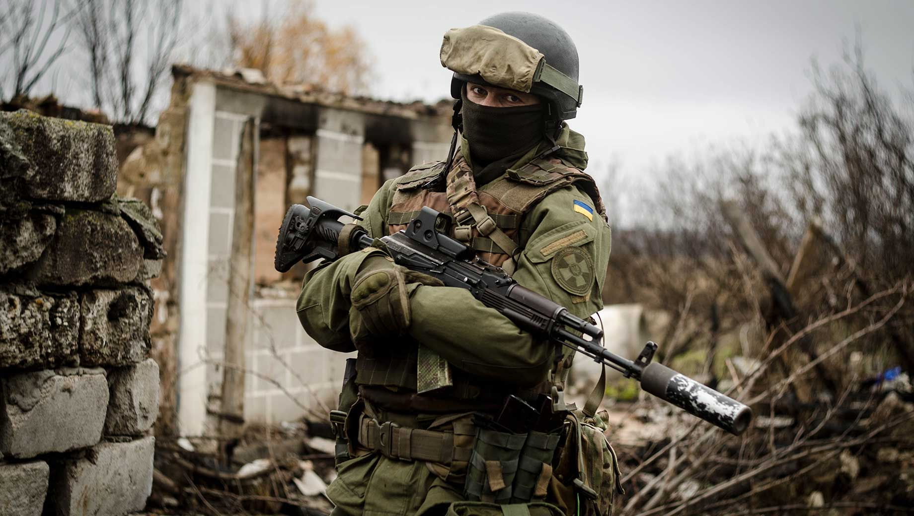
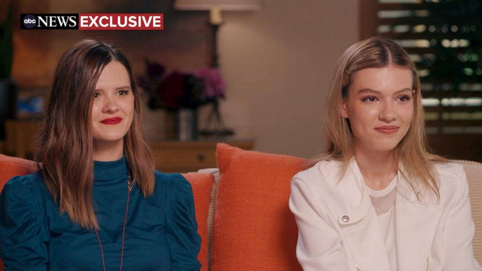
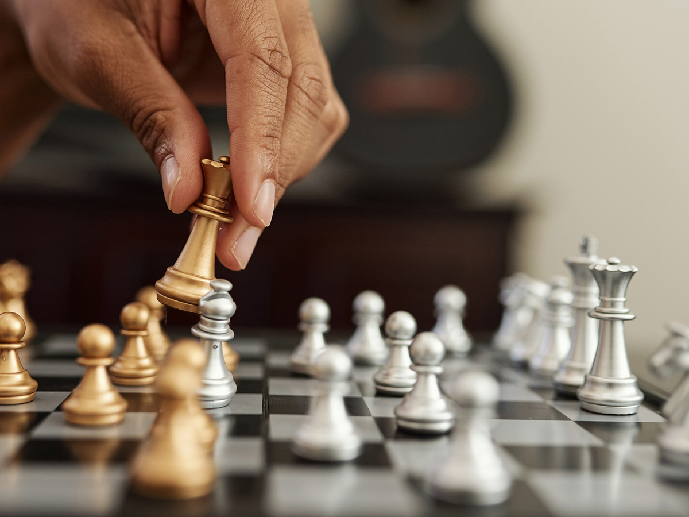

Ye in a mask on Alex Jones
Ye is chillin
AJ is chillin
What more can I say?
12.1.22
Dr Jane Ruby shows proof the vaccine is 99% graphen oxide.
It's poison.
I just want this webpage to be a place where I can collect and post good bitchute videos that you wouldn't get to see on social media or youtube.
This video tears down the false idol of Elon Musk and shows how he's a fraud.
Cloudland
--------------------------------------
Dr Robert Malone, co-creator of the mRNA vaccines who is against the vaccines and was a controversial guest on Joe Rogan, talks about how we are in an information war right now with propaganda and censorship.
Youtube, the news, and all the social medias actively censor information and sculpt the reality many people experience. It takes the occasional trip into bitchute to be able to hear anything true. That's just the reality we live in. There's a lot of bullshit on bitchute too but at least some of it is true, whereas on youtube it's guarenteed to be missing the truth of what's going on.
My website is uncensored and although I sometimes talk about myself it's also a place where you can be exposed to information they are actively trying to hide from you.
If it's an information war we are in then I'm a soldier, like the one pictured above. If I had more money, support, and time I would do this even more. I would buy new equipment and host a video podcast exposing the truth and lies of this world. I would discuss a new religion to form, and a new government. We live in a rotten world and we need to make serious changes. We need to come together and build something that lasts like our founding fathers. We need to defend our constitution and to create new understandings of health and wealth. We need to defend newborn children against these experimental vaccines! We need new ideas, new economic systems, new educations. We just all need to participate and to use our brains to fix this world. I know we can do so much better if we just tear down this veil and this evil system exploiting us and keeping us in the dark. They're so good at tricking us most of us can't even see the trick. Some even fight to defend the system, because they think they're getting a good deal out of it. It's wrong. It's morally detestable and I just wish I had the resources and time to make a bigger difference. I need as much support as I can get from people who realize we are in this war.
Tomorrow I start my new job and I will do my best to make money so I can continue this just cause of reform and putting the truth out there. Please consider going to /support and becoming a patron with a small monthly donation. I'll also accept Venmo @Maxwell-Jann. I'd like to thank my parents for supporting me financially but they're not doing it because they support my cause, they're doing it because they support my recovery from addiction and mental health problems, and I'm their blood and they love me. I take responsibility for my addiction problems with weed and also for my bipolar episodes. I'm currently on half a dose of my meds and I feel a little more like myself and I'm trying to be mindful of my grandeous ideas and inflated self-importance but I got fired up while writing this post. What right do I have to lead others? But my psychosis is not based on nothing. I know for a fact that conspiracies are real and the truth is censored. Most people aren't going to see the value in what I'm doing here and I'm going to do it anyways, to the best of my ability. I'm not ashamed to ask for financial donations because I work hard on formulating my opinions and writing this blog. This really is war. I really am fighting an uphill battle. I really do need your help. Yes, I slip up and believe things that aren't true occasionally, or word something the wrong way, but that doesn't take away from the value I bring with these words when I get it right and make a positive impact. Words are magic and I'm your wizard. Even just a text letting me know you like my blog goes a long way. God Bless, -Commander Elam.
We're being held back as a civilization by special interest groups, a military industrial complex, big pharma, and the Illuminati. Our leaders should be strong young men and women with new ideas and the ability to have healthy debates. Our current leadership is embarrassing, and our values are wrong. Celebrities perpetuate the sick system and are ostracized when they try to improve it instead of profit off it, see Kanye West. The celebrities were used like puppets when Covid first broke out so they could tell everyone to obey the mandates and take the vax. Some people think they are successful in life when really they are ignorant and nowhere near the truth. You can't take your money with you after death but it's possible we can take the truth with us as eternal consciousness. I evaluate my life based on how close I am to the truth and how close I am to doing what my soul calls me to do. I don't care about societal metrics. I can envision a much better world and I know I can bring about it's existence here but it's so discouraging when most people walked right into the trap of the vaccine, showing me they have no grasp of the truth of this world, and are victims of propaganda and mind control. Most people are useless to me as soldiers. Most don't even know we're at war or see the bullets flying. But the red blood cell, as oblivious to illness as it is, isn't useless to the white blood cell's quest to heal. I view most people as red blood cells that have a purpose but they can't cure the disease like the white blood cells are meant to do. RBCs are still vital to the health of the organism and make the world go round, so to speak. Everyone has value to bring, but in the war against illness it is the WBCs I need to recruit into my army so we can eradicate the illness from the body of Earth.
If you're vaccinated, and you realize you made a mistake and you want to support this mission I'm on then I accept your help and think you can still avoid the boosters and contribute to our collective health, but right now it feels like I'm an army of one. I know at least 3 people in my personal life who are also white blood cells. They are rare. Some of us weren't designed by God to be able to sense the illness and see through the veil and that's okay. RBCS are equally valuable overall. I don't like the terms NPCs or "non-player characters", or sheeple, because we have to consider the people who are blind to this secret war to be our RBC allies, even if they are sometimes poisonous.
I wish to God I had more power to push our civilization forward. I wish the truth was completely revealed to all. I'm trying my hardest with this website and I wish I had more visitors and readers. I cannot stress how serious this is. I've been doing this since I made a Facebook group in highschool called "Heads Well Above the Sand" where we discussed 9/11 conspiracy theories, aliens, and what we should do about them.
I can be a normal guy and function in this world and see the simple beauty in the life we already have, for sure. Go Browns. But I know deep fucking down that something real is missing here. We need stronger leadership and a direction people can all get behind. We need something to rally behind, like the pursuit of truth, wherever it leads. We need calm debates, and better elections. We need to follow the truth wherever it leads and to deal with conflicting information approriately, rather than demonizing it as inferior and crazy which is what's happening now. Our general attitude as a species is intellectually embarrassing. Most people don't even use their own brains. They are spoonfed what to think, how to think it, and when to think it. They tell us when to get angry, and what to be angry about. They tell us to line up and take the vax and 90% do it. They tell us to put masks on our faces, and to lockdown our country. They think they can get away with it. Over my dead body. I will never stop my assault against this tyrannical system here. I will shine through like light bursting through cracks of an eclipse. My life story and struggle will prove successful and I will reengineer human society and point it in a direction we all can agree is better. You may think that's arrogant of me to say but can't we all agree that censorship of free speech is moving in the wrong direction!? We're going the wrong way where we're more unhappy, more divided, have less faith in leadership, and less trust in the news. If we formulated a new society built on fostering independent thinking and healthy calm debate over tribalized socially engineered groupthink we might actually solve the world's problems. We need change. We need to oust the people or beings in positions of power that restrict the freedom of speech and actively try to hide the truth and poison us. Elon Musk is potentially a false idol, we'll see what he does with Twitter. I could see a superintelligent AI being of use to us reorganizing society but it could also backfire and be used to enslave us.

We need a revolution of mind, body, and soul. We need a new age of awakening. We need a new law. We need a new breakaway civilation that is allowed to make it's own constituition so we can compare it's progress with whatever we left behind. I'm confident that a city under my rule could thrive if we were unfettered by the globalist agenda to brainwash us all into slaves. We need a government where taxes are voluntary, and people actually have a working relationship with their government. Right now we're just getting owned, lied to, and exploited.
Please join me in Cloudland, as I try to become the type of person who can really make a difference in the history of humanity, using everything I've learned from the Internet and my life experiences. Standing on the shoulders of giants, I am willing to lead us to prosperity. I have a long way to go physically, spiritually, emotionally, and financially, and it wouldn't be easy reorganizing a society, but this idea pumps me up. I don't want to be like the knight in my last post who never tries to live out his dreams. You can laugh if you want, but at least I'm trying. And I'd rather die than give up. If I see a real fucking leader, I will get behind him, but right now it looks like I'm going to have to start this myself.
Elam Forever.
I am raising a secret army in this invisible war. My first recruit goes by Xavier Wolf. My second soldier is Nero. When you join my army, you get to pick your own name. Our legal names are given to us by our parents, but it's vital to come up with your own name that has special meaning to you. My spirit name is Elam Ahpla, alpha male in reverse. What name would you give yourself? If and when we reach 117 members, we will have our first mission, like a beach cleaning or feeding the homeless to start with some community service. It would be a little bit like Project Mayhem in Fight Club, but better, and creative and helpful rather than destructive. Not anyone can join; you have to pass a diagnostic test I'm working on to determine if you have thoughts of your own or you've been conditioned to believe the official narratives. In other words, a test to determine if you're a red blood cell, or a white blood cell.
New video up on /videos and new music recommendation up on /bands
I like the Thutmose songs Blame, and Ride with Me.

Joe Rogan had Duncan Trussel on on Halloween and talked about how Homeland Security has become the thought police on twitter or "truth cops". The supposedly leaked documents introduce a new term "malinformation" which means "information that is true but is often out of context with intent to harm." This is letting the government censor things even if they are factually correct! This really is a war for your mind, and war of information, and I'm on your side.
They only pretend to be on your side. I don't buy any of the talk about censorship of misinformation or disinformation. Let people think for themselves and make up their own minds. The truth is the Government is governing your mentality and wants to prevent you from seeing contrary information that opens up your minds broader than the mainstream narrative and whatever they're pushing at the time. Our first amendment is under attack, and so is our bodily autonomy, and this is a cause worth fighting for.
11.1.22
Jordan Turpin and Selfish vs. Selfless Motivational Strategies
I learned something about life today. I had heard about the story before of a 19 year old girl escaping an abusive family but I never heard the full story until today on youtube.
Jordan's a unique girl. She's simultaneously mature and innocent. She's the girl on the right and you can click on the picture to go to the video interview.
She knows what is important in life and provides a great perspective, but she's also got the charm of a little girl. Her vocabulary is simultaneously intelligent and limited.
She was socially isolated and tortured but I find it so inspiring that she was able to rescue her siblings it really warms my heart to see her so happy now.
The relationship with her and her sister Jennifer is awesome. I'm really proud of these girls and girls like Yim Ne Park from North Korea having nice adult lives. They are getting to share their light with the world and I love that they weren't bottled up forever.
Life hasn't exactly been going my way as much as it could and I think it's because I've been coming at it fro the wrong direction with the wrong attitude. My mindset recently has been about what I can get from the world, instead of what I can give to it.
Getting what's mine is useful to a point when you're no longer relying on others, but I lack the motivation to be a selfishly driven individual.
I don't realllly want to put in the effort required to "get" the girl or even a computer programming job. When my focus is on myself, and my legacy, I stagnate. However, seeing a little girl like Jordan really fires me up and makes me wish I could help make this world a safer place for kids growing up.
There's something so fundamentally wrong about depriving any form of consciousness from basic caregiving when they are helpless. If I could just build my life around making another form of consciousness happy instead of my own, I think it could bring me joy indirectly, and that's not even why I'd be doing it... but when you chase happiness as a selfish pursuit it devolves into the seeking of temporary pleasures and drugs and fast food, for me at least.
It is only when focusing on others, that one can experience true sustainable satisfaction. I feel like if I could just make a cat happy and give him an awesome place to live that would be a huge achievement in the universe because we've all seen how miserable cats can get when living in bad conditions. Animal and Child abuse are tough to tackle but I can at least try to raise a loving family of my own and focus on spreading love and treating other forms of consciousness rightly.
I want to give to the world. I no longer wish to just win the lottery with no effort. I want to make a real difference in another's life, whether that be a cat or a bearded dragon.
Getting home from work and trying to amuse myself with lonely activities is not the way to go. I have to start doing things for other people.
Imagine how awesome it would feel to be able to come through for a stranger that's only ever been abused. I remember one time I lived with a girl who had never been on a date so I took her to the movies on a nice date as a friend and that was really cool to do but my girlfriend at the time was not thrilled with my choice of altruism.
I don't regret it. Look, I've experimented with my little self-improvement hiatus but the vacation is over. I'm back. I shaved my atrocious beard and I went to the gym and I'm going to bed early. I did my laundry and I'm going to try to be as useful and beneficial to this world as possible. I'm going to make my creator proud of creating me. I'm going to be there for someone else when they need it, and I know they may return the favor someday but that's not the point. The point is to understand how bad suffering can get, and to do what you can to alleviate the suffering of others.
I'm very excited to have discovered this little mindset shift and I will be more positive and altruistic moving forward. I want to get my life in order so that I can be in a position to help others. The previous motivation of getting my life in order just so I can say I'm better than you was not motivating enough.
But if I can improve myself, on the premise of helping others, and being useful to them, then I think I can actually be satisfied with my life when I'm dead.
I think I might actually be able to have more dicipline if I tap into this higher purpose that I feel. I really get emotional with these stories of these helpless girls I wish I could help.
I'd just like to thank Jordan and Jennifer for inspiring me and changing my perspective on life. We should all be on the lookout for abused people and be a friend to everyone we meet because we're all just kids who got older. We all still need to feel safe and loved. God bless.
You can get results with selfish motivations but those results will always be corrosive because they were obtained without consideration of the other people's feelings. Relationships built on loving the other person are much better because you naturally want to give that person the best version of yourself instead of just trying to take what they have while you have it.
Kobe wasn't interested in getting the attention of others. He was interested in providing the NBA with it's greatest competitor ever. He was a giver, not a taker. He gave, so much of himself, all of himself, to his craft, for us... the fans. For basketball itself. Kobe was a giver. I aim to be a giver. A provider. I want to help. I know how shitty life can be. And the Illuminati taking over the world doesn't even matter when they do it in secret and you can still go to the park with a friend and have a good time (for now, kind of). They have closed parks down recently but you can still kind of have a great time, coming from the perspective of the abused kids. They think the park is heaven and home is hell. I had a loving home and it was STILL trying at times. Imagine what that poor girl went through. I just hope she runs into good people and has a nice life from here on out. Thanks for reading. Love, Max! I love you all.
11/29/21
Life is a beautiful journey | Illuminati Master Plan
Life is a beautiful journey
I was researching robotics news today and it made me realize how incredible human consciousness is.
The problems I wrestle with every day are highly individualized.
I'm kind of on a self-improvement hiatus. It's kind of like I'm constantly downtalking myself for being short of my own expectations.
I often project 20 years into the future and see what can go wrong but life is really long and I'm only 30 years old. I will probably have many monumental moments in my future and it's a lot of pressure to become the man I wish to be in those situations.
Something happens to me and I often think about how it could have gone better if I were better.
It's an interesting choice I have of whether or not to self-improve or chase the girl.
And what would make me truly happy? Putting up chess teacher fliers and getting a new student? Going on a date with a pretty girl? Playing in a chess tournament? Learning something new in code?
I don't know but I'm also kind of down to sit back for a little bit and celebrate what I've achieved already. I'm very happy to be able to play the guitar and chess and call of duty. I'm happy with a lot of what my life is. I just wonder what it could be, but sometimes the beating myself up for not doing it is counter-productive. Maybe by letting back for a bit I can reevaluate my perspective.
This blog in my opinion has gotten too self-centered. I think it's natural for me to bring my own experiences into it but I think initally I was setting out for it to be more enjoyable or educational for others. Now it's kind of become self-therapeutic. However, I would like to talk about vaccine passports as restaraunts near me.
Illuminati Master Plan
I heard that restaurants in LA county require your proof of vaccination at the door to eat inside. Even the vaccinated have to be annoyed with this. The unvaccinated are not only annoyed but also cannot eat there! Ridiculous.
This is the one place I can talk uncensored because I basically own it, but I'm finding myself censoring what I'm about to say, but I won't. I think the covid pandemic does not exist as presented to the population. We'll use the term Illuminati to simplify a scenario where one group leads all groups interwovenly. I think the Illuminati made the covid-19 virus in a lab and then they released it in Wuhan China in a world wide false flag. The Chinese government took swift authoritative action and eradicated it but it was allowed to get everywhere else including America.
Then, in America, the CDC and some scientists came out with astronomical death projections from this new virus on the loose.
Americans were told this was so serious the best thing to do would be to stay at home and not ask questions for 2 weeks and shut down all businesses.
When we agreed, they said, "Can we please have one more week?"
We agreed again. Then it's been about 3 years since and only gotten more authoritarian, although it does ebb and flow.
Okay, so now that the Illuminati has shut down the entire world at the drop of a bat, they then issue a worldwide dress code to our faces. These stupid, surgical masks for regular people.
And then they police them like mad! Like you cannot get your hair cut mad. These restricitons were so draconian looking back on them that I still can't really believe it. This was all done in the name of a problem they themselves created in a lab on purpose.
Then, for the next step in their master plan, the Illuminati rushed in the new Covid Vaccine. The Illuminati has members in the presidency, the CDC, Big pharma, and everything in between. So, they rush and approve this emergency usage of a new type of mRNA vaccine and not only that, but they mandate everyone do it. They're hellbent at vaccinating all of us, children too. So they basically want a completely controlled docile population incapable of communicating, leaving their homes, seeing faces, plotting and overthrowing the government, or even just socializing and having fun. They want slaves. They want slaves and they want to own the blood in their veins and the neurons in their brain and they also want to control their mRNA and DNA.
The evidence of an overaching authority on this planet is overwhelming. The Illuminati control all major elements working in concert to carry out this insansely fast vaccine mandate for kids to go to school.
What's their endgame? Some say depopulation, or sterilization. I don't lean that way personally. I tend to think I don't know what they're going to do next. I'm having trouble guessing. I've also heard the vaccine leaves the arm and can travel through the whole body so it could go to the brain and alter some things the government wants different in 80% of people.
The problem with thinking that this is a concerted effort because of the deadly nature of this virus is that you're not acknowledging who created the virus and why.
The response to the virus, not the virus itself, but the response to the virus by world governments has been nothing short of earth-shaking. Many of history's greatest moments involved deception. The public is the last to know.
I'll leave you with a song from Will Smith's daughter. Also, if you believe me about the Illuminati Master Plann and don't know what to do, I'd give Jesus a second glance.
11/16
PHD Dire Warning
I don't know if what he's saying is true but I certainly don't want to take it and I don't to give away the password to my rna. Like I guard that with my life. I'm not signing up for a spike protein made in a lab from this crooks. It's so wild that this is going on. They are injecting children. People are getting booster shots although probably some are coming to their senses.
It's crazy to me how radical it is to just take your chances without a vaccine or a mask. It's called breathing the air and being human. I think the vaccine, if poison, is slow acting. That way, they can have most the people survive it while they get everyone to take it. Like a pirate giving poison wine to his crew to steal all the treasure for himself.
11/14/21
Self-Love
I love myself, I accept myself, I forgive myself. I'm proud of myself.
I work hard, kick ass, and take names.
I entertain my fantasy league. I sell insurance. I spit conspiracy theories and I write songs and play chess.
Today I went to the gym at night in my sweatshirt and slides because it's comfy. Then I went swimming and took a jacuzzi. It was nice.
I am going to be nicer to myself. Although I think I could do better, it's important for me to accept myself during the process of improvement. I really want a scale to weight myself and see if I'm losing weight, and I also want a blender to make smoothies. Peace out !
11/2/21
Cabin in the Woods
I went to a Halloween Party in a cabin in the woods over the weekend

It was very fun and a nice way to get away from my own thoughts.
I'm lucky to have such a great group of friends that we can do fun things with as adults with money.
Renting a cabin and splitting the rent for a weekend is an awesome time. Next time, I would like to bring a girlfriend with me.
If I can have a dating profile with fun pictures like this, instead of lonely selfies, and if I can hit the gym a bit more, instead of hitting the candy section of 711, I should be able to get some more dates, and actually find a girl I can take to cool events like this.
Life is long. I'm proud of myself for working through everything I've been through mentally. Ya, I got scarred, Ya I gave up and ya I went crazy. But I'm still here. I'm still me. I'm not done with life. I just have to shake off the "story" I've been telling myself about myself and start a new one.
Each month of this blog is a fresh start for my thoughts, personality, and focus. This month I want to focus on clarity. Just seeing through bullshit and taking sensible steps toward my desired life. I'm going to have my actions, and mind join together on a common purpose. I'm going to work hard, and move closer to who I want to be.
I want to be a better, more reasonable man. I'd like to be humbler, but also more confident. I'd like to stop doubting myself. I have no disability, but sometimes I act as if I do with my body. It's hard to explain but I feel like I doubt myself and feel like I'll make a fool of myself with my body. I'm not comfortable with my body. It's not how I learned to be. I used to like having my shirt off around people, but now I'm embarrassed.
Still, I got some Yoga in over the weekend with my friend's girlfriend and I will try to focus on that this month. I will focus on my body and stretching it and working it out properly. Happy body, happy mind.
That's my new slogan I will try out this month. Happy Body, Happy Mind.